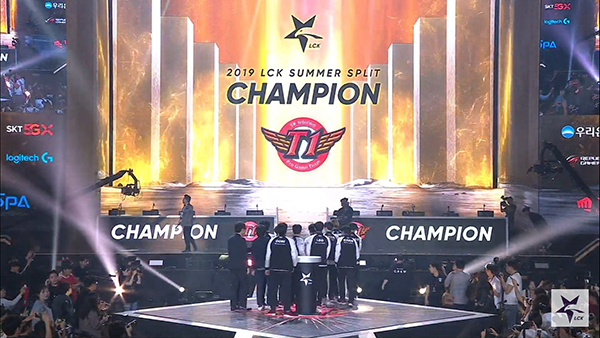
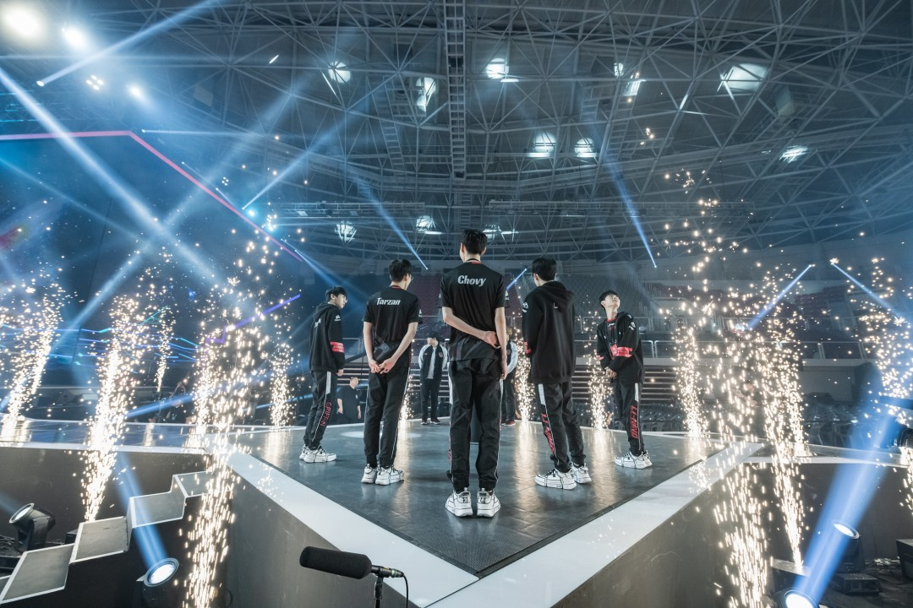
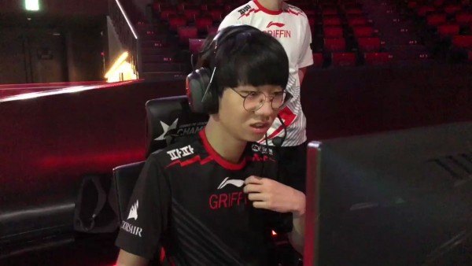
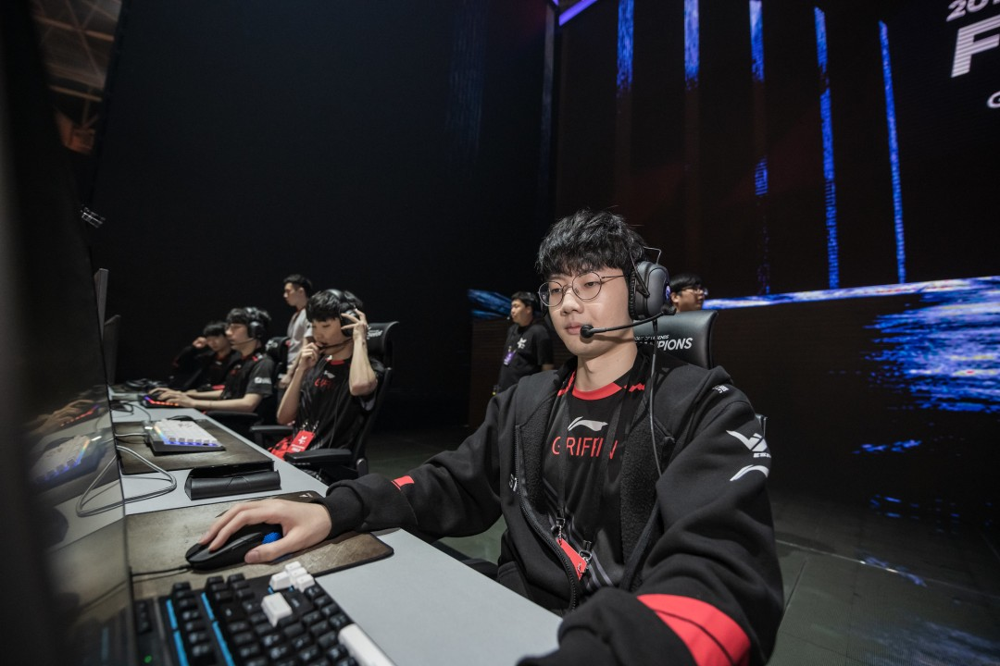
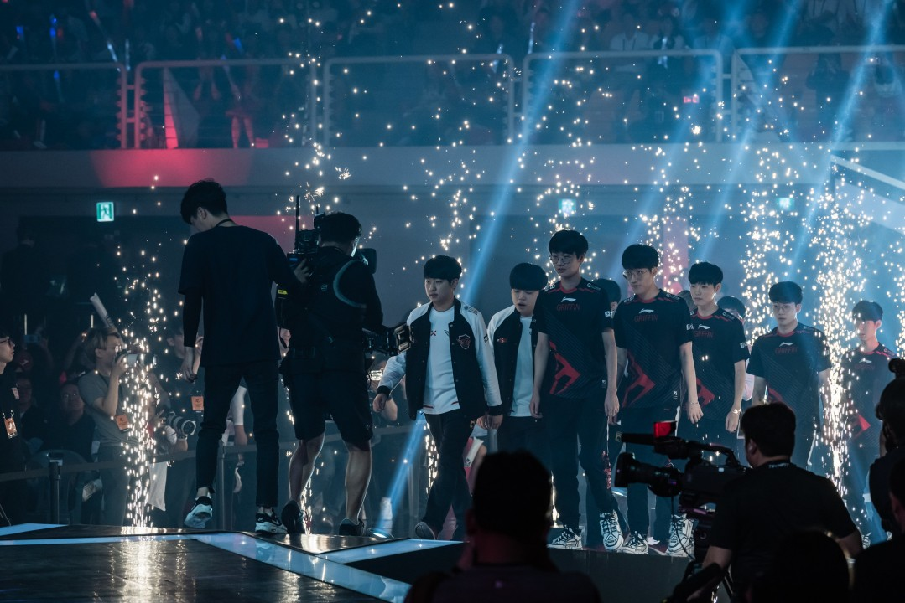
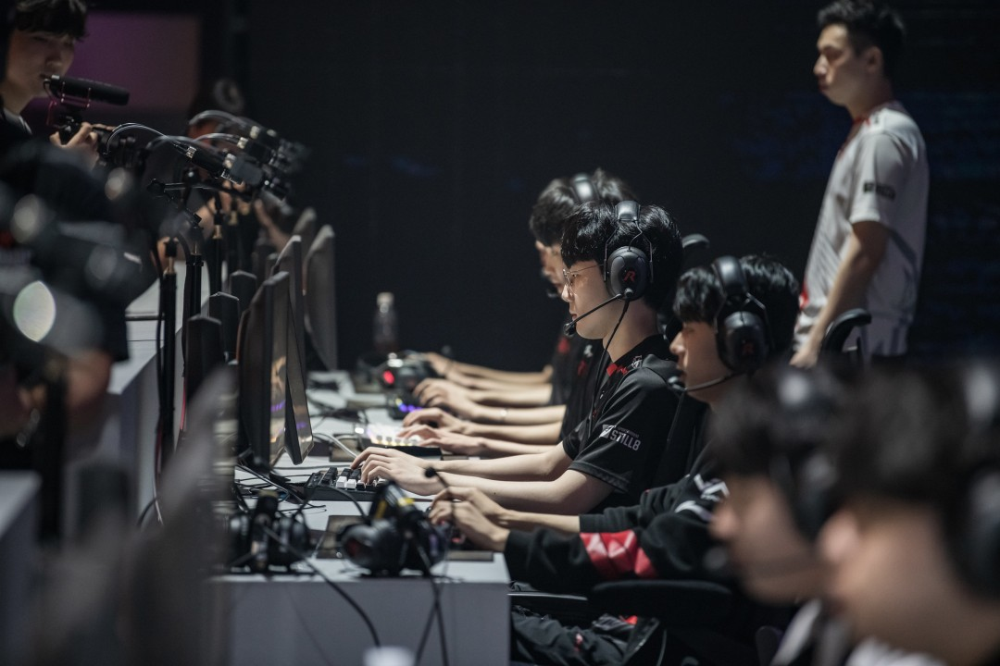
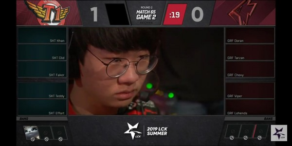
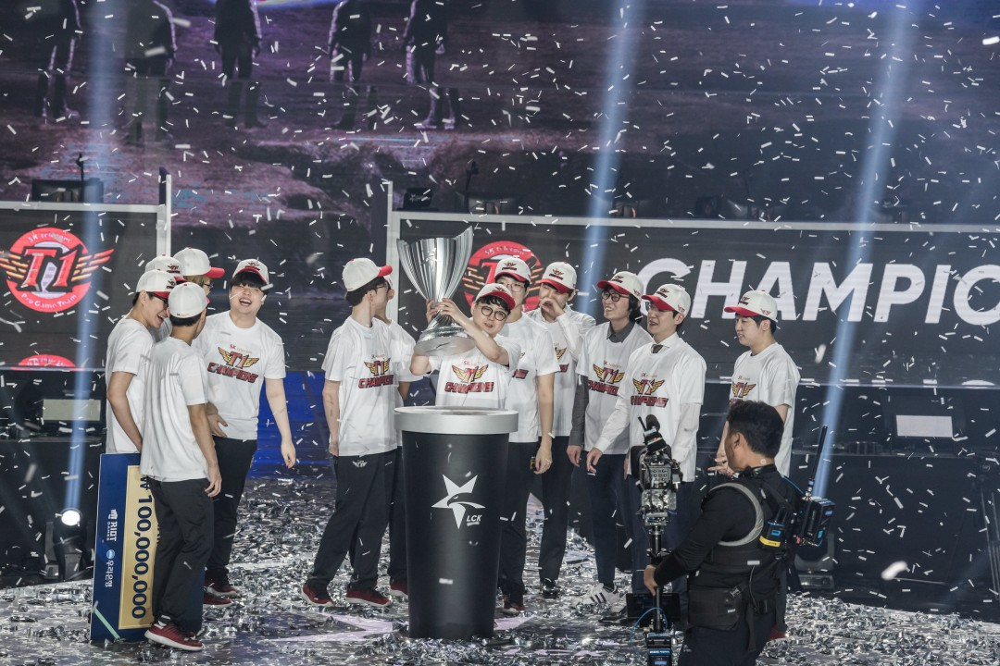
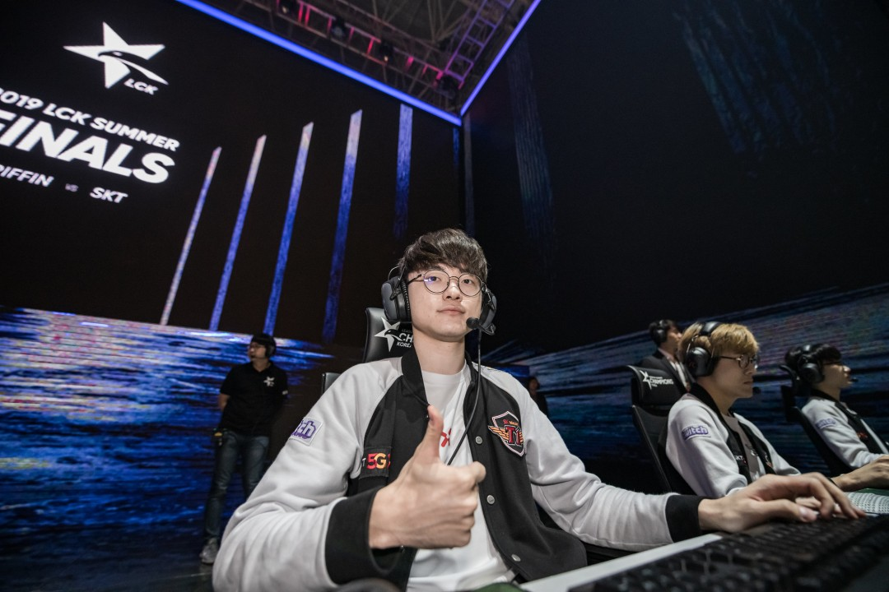
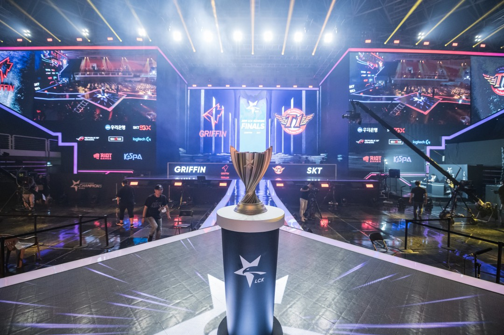

Tin nổi bật |
Tin nổi bật | September 4,2019 |
September 4,2019 | By: Hulkk
By: Hulkk
Sau 4 ván đấu căng thẳng, cuối cùng các thành viên của Griffin đã lại một lần nữa phải chịu thất bại trước SKT ở trận chung kết LCK mùa hè 2019 vừa rồi, họ trở thành đội đầu tiên trong lịch sử LCK đạt Á Quân ba mùa giải liên tiếp đồng thời đứng ngang hàng với KT Rolster về số lần hạng nhì.
Griffin đi vào lịch sử sau thất bại trước SKT ở chung kết LCK mùa hè 2019
Sở hữu một đội hình đồng đều và mạnh ở cả 5 vị trí, vậy tại sao đội quân của huấn luyện viên cvMax vẫn chưa thể một lần chạm tay vào chức vô địch LCK dù đã có được một phong độ khá ổn định ở vòng bảng và vẫn luôn được đánh giá là một ứng cử viên lớn cho ngôi vô địch?
Lối chơi không còn gây khó khăn cho đối thủ
Ngay thời gian đầu mới xuất hiện ở LCK, Griffin đã là một đội tuyển không ngán bất cứ đối thủ nào với khả năng giao tranh cực kỳ tốt với sự ăn ý của các thành viên đã thi đấu với nhau nhiều mùa. Họ trở thành siêu tân binh rồi lọt đến tận trận chung kết với KT Rolster của “vua về nhì” thời điểm đó – Score, tuy không thể giành được chức vô địch nhưng làn gió mới mang tên Griffin đã nhận được sự quan tâm rất lớn từ những người hâm mộ LCK cả trong nước và quốc tế.
Griffin luôn được đánh giá là ứng cử viên vô địch kể từ khi xuất hiện ở LCK
Điểm mạnh nhất của họ là chính là sự kết nối giữa các thành viên, đội hình của Griffin không có nhiều sự thay đổi giữa các mùa giải, chính vì vậy các thành viên luôn phối hợp với nhau rất tốt và khả năng kêu gọi giao tranh cũng là rất tuyệt vời.
Thay Sword bằng Doran ở mùa hè nhưng kết quả của GRF vẫn là thất bại
Thế nhưng có vẻ lối chơi này của Griffin đã không còn làm khó được SKT, họ giành được 2 chiến thắng trong cả 2 lần gặp nhau ở trận chung kết. Đội tuyển của HLV Kkoma đã tìm được lời giải bằng cách chủ động trong việc kiểm soát khu rừng của Tarzan khiến cho lối chơi của Griffin gặp rất nhiều khó khăn, đường trên của Doran thường xuyên bị các thành viên của SKT nhắm đến dẫn đến tình trạng phế hoàn toàn về cuối trận.
Tarzan lép vế hoàn toàn trước Clid ở trận chung kết
Về mặt giao tranh cũng vậy, những vị tướng mang tính đột biến cao của Griffin gần như không có tác dụng khi không thể chạm được vào những nguồn sát thương bên phía SKT, ngoại trừ ván 3 giành chiến thắng, những ván thua đội hình của họ giao tranh rất rời rạc và mắc phải nhiều tình huống di chuyển lỗi.
Tâm lý của các tuyển thủ chưa ổn định
Griffin là đội hình trẻ nhất từng ba lần lọt vào chung kết
Với lối đánh vốn đã thành thương hiệu của mình, các thành viên của đội bắt buộc phải có sự tự tin tuyệt đối, sự tự tin đó chính là linh hồn trong lối chơi của họ. Tinh thần chiến đấu của họ rất cao, sẵn sàng tạo bất ngờ cho đối thủ mà không cần phải đợi đến lúc chắc chắn thắng mới bắt đầu giao tranh như những đội tuyển khác ở LCK.
Thế nhưng dường như trong mỗi trận chung kết, các thành viên của Griffin lại lộ rõ ra mình vẫn chỉ là những đứa trẻ còn non nớt chưa đủ bản lĩnh để trở thành một nhà vô địch. Khác với những trận bo3 ở vòng bảng, các trận bo5 thường gây ra một sức ép lớn hơn với các tuyển thủ. Và với sức ép đó đè nặng lên vai, các thành viên của Griffin dường như không còn là chính mình.
Griffin không thi đấu bo5 nhiều như SKT ở những mùa giải gần đây
Trong trận đấu với SKT, với việc bị đối thủ hủy diệt ngay ở ván đấu đầu tiên khiến tâm lý của các thành viên Griffin bị ảnh hưởng không nhỏ trong những ván tiếp theo. Đặc biệt là Doran, thành viên mới nhất của GRF đã không có được một ngày may mắn khi bị đối thủ dồn ép phải nằm xuống nhiều lần, lật lại quá khứ trong trận đấu ở lượt về với chính SKT, Doran từng xuất hiện với đôi mắt đỏ hoe sau khi phạm phải sai lầm chết người đem lại chiến thắng cho đối thủ.
Doran thường không gặp may trong những lần đối đầu với SKT.
Tuy nhiên, nói đi cũng phải nói lại, với việc độ tuổi trung bình của tất cả các thành viên chỉ khoảng 20 tuổi, trẻ nhất LCK Mùa Hè 2019. Ba lần vào chung kết đã được coi là thành công lớn đối với Griffin, thời gian để hoàn thiện bản thân còn lại rất nhiều, cơ hội vô địch cũng vậy, miễn là họ không bỏ cuộc!
SKT đã quá xuất sắc
Khởi đầu mùa giải không như ý với chuỗi thành tích đầy thất vọng ở đầu mùa, thậm chí còn phải nhờ đến may mắn mới có thể thắng được Jin Air Greenwings. Thế nhưng trong một mùa giải kỳ lạ, SKT như lột xác hoàn toàn để trở lại mạnh mẽ ở giai đoạn sau của mùa giải với chuỗi 9 trận thắng liên tiếp, họ kết thúc vòng bảng ở vị trí thứ 4 chung cuộc qua đó tiếp tục có mặt ở vòng playoffs và vô địch lần thứ 2 trong năm nay.
SKT vô địch lần thứ 8 trong lịch sử LCK
Tiếp nối những trận đấu trước đó, phong độ của các tuyển thủ SKT trong trận đấu này vẫn đang rất cao. Những pha xử lý kí năng cá nhân của Faker và Teddy khiến cho những toan tính của Griffin phá sản hoàn toàn, Teddy còn thậm chí không phải nằm xuống lần nào. Clid cũng đã trở lại còn mạnh mẽ hơn cả mùa giải trước, màn trình diễn của anh trong trận chung kết khiến Tarzan trở nên mờ nhạt hoàn toàn qua đó xứng đáng giành được danh hiệu MVP của trận đấu.
“Quỷ vương” Faker đã có một trận đấu xuất sắc
Ấn tượng nhất trong chiến thắng của SKT ở trận chung kết phải nhắc đến cái tên Effort, tuyển thủ đã thay thế Mata khi anh chàng này không có phong độ tốt từ sau chuỗi trận thất bại. Màn thể hiện ở trận chung kết đã chứng tỏ tại sao tuyển thủ 18 tuổi này là người được chọn. Những pha xuất hiện hoành tráng bằng vị tướng Rakan của Effort trong trận đấu này gây rất nhiều khó khăn cho đối thủ. Ngoài ra vai trò bảo kê xạ thủ của anh cũng hoàn thành tốt với việc Teddy không phải nằm xuống lần nào.
 "